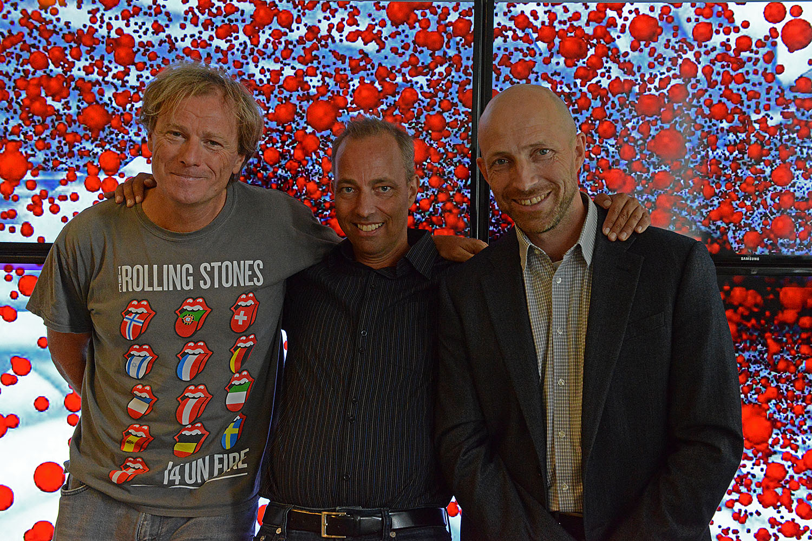
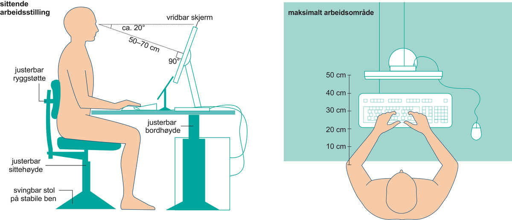
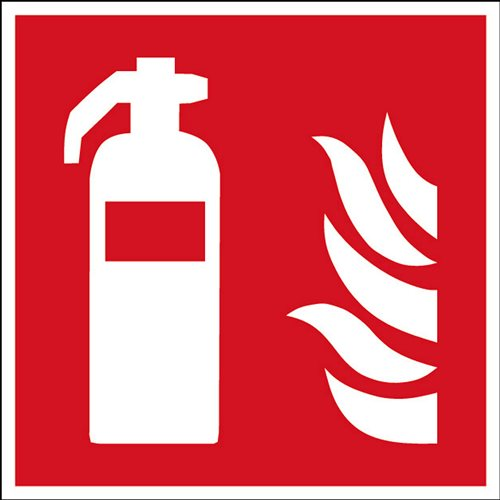

Alle bedrifter må følge regler for å sikre en trygg arbeidsplass for de som jobber. Dette tar vi i Bergen TV og Media på alvor! Disse reglene er for å forhindre brann forurensning, arbeidsulykker, osv. Vi skal sørge for at disse reglene blir ivaretatt.
Vi i Bergen TV og Media skal sørge for at HMS regelverket alltid utvikles og forbedres i samsvar med samfunnet, og blir formidlet videre til våre ansatte.
HMS - SOSIALT MILJØ:
Hvorfor er sosialt miljø viktig?
Vi mener at det sosiale miljøet er noe av det viktigste for ansattes HMS, fordi alle skal føle seg trygge og velkommen på arbeidsplassen. Vi ser også at det er svært viktig for å få opp og holde på moralen på arbeidsplassen.

Foto: Helene Rene Skarstein, Sosialt milsø på Bergen TV og Medie: Kim Jackobsen, Terje Kurt Svensen, Hans Jakob Pedersen
Våre Tiltak:
Vi jobber aktivt for å arangere samlinger med arbeidere for å skape fellesskap som bidrar til det sosiale miljøet.
Vi har et strengt regelverk mot hets og annen trakassering på arbeidsplassen. Vi har null-tåleranse for brudd på disse reglene.
Vi ser også nytten av å ha arbeidsoppgaver som krever samarbeid for å skape god kontakt og kommunikasjon mellom arbeidere på arbeidsplassen.
HMS - ERGONOMISKE TILTAK:
Hvorfor er det viktig?:
Ergonomiske tiltak er viktig spesielt for våres bedrift. Vi ser at våres arbeidsplasser må gjøre tiltak for å stoppe slitasje på kroppen. Det er veldig lett å få skade i for eksempel håndledd, rygg, osv. Spesielt ettersom at vårt arbeid er mye stille sitting forran datamaskiner.
Vi setter inn følgende tiltak:

- Ergonomisk utstyr som mus, keyboard, pulter, stoler, osv.
- Treningssenter på arbeidsplassen, for å ivareta fysisk form.
- Lære arbeidstakere øvelser laget for å hindre slitasje og opprettholde en god fysisk form.
- Lydisolerte vegger i rom med mye støy.
- Skjermfilter på monitorer som minker hvor mye blålys arbeideren blir utsatt for.
- Inneklima - bra luft og temperatur.
- I Bergen TV og Media har vi Turgruppe med annsatte som skal bedre fysisk form og det sosiale miljøet på arbeidsplassen.
HMS - BRANNVERN:

Hvorfor er det viktig å forberede seg på brann?:
For alle ansattes og bedriftens sikkerhet må det være en plan i tilfelle brann.
Vi i Bergen TV og Medie er pålagt å ha en plan i tilfelle brann i HMS oversikten vår.
Vi holder jevnlig brann-øvelser for å forbrede arbeidstakerene i tilfelle brann, og skjekke at ting som brannalarmen er fungsjonell og for sjekke at alle møter opp på avtalt møteplass.
I våres bygg er det plassert brannslukningsapparat tilgjengelig i alle rom, alle våre ansatte skal ha gått på kurs for å lære seg å bruke ett brannslukningsapparat.
Det er tydelig skiltet ved alle nødutgangene våre. Alle rom skal ha sprinkleranlegg.
Dersom en brann skulle finne sted på vår arbeidsplass vil alle dører lukkes automatisk. Dette er for å forhindre oksygen tilførsell til brann. Vi har også brannslange, brann øks i tilfelle brann.
Dette er de tiltakene som vi ser nødvendige for våre ansattes og bedriftens sikkerhet.
LOVER
Våres HMS-regelverk står i samsvar med disse lovene:
§ 3-4.Vurdering av tiltak for fysisk aktivitet Arbeidsgiver skal, i tilknytning til det systematiske helse-, miljø- og sikkerhetsarbeidet, vurdere tiltak for å fremme fysisk aktivitet blant arbeidstakerne.
§ 4-3.Krav til det psykososiale arbeidsmiljøet
(1) Arbeidet skal legges til rette slik at arbeidstakers integritet og verdighet ivaretas.
(2) Arbeidet skal søkes utformet slik at det gir mulighet for kontakt og kommunikasjon med andre arbeidstakere i virksomheten.
(3) Arbeidstaker skal ikke utsettes for trakassering eller annen utilbørlig opptreden.
(4) Arbeidstaker skal, så langt det er mulig, beskyttes mot vold, trusler og uheldige belastninger som følge av kontakt med andre.
(5) Departementet kan i forskrift gi nærmere bestemmelser om gjennomføringen av kravene i denne paragraf.
§ 4-4.Krav til det fysiske arbeidsmiljøet
(1) Fysiske arbeidsmiljøfaktorer som bygnings- og utstyrsmessige forhold, inneklima, lysforhold, støy, stråling o.l. skal være fullt forsvarlig ut fra hensynet til arbeidstakernes helse, miljø, sikkerhet og velferd.
(2) Arbeidsplassen skal innredes og utformes slik at arbeidstaker unngår uheldige fysiske belastninger. Nødvendige hjelpemidler skal stilles til arbeidstakers disposisjon. Det skal legges til rette for variasjon i arbeidet og for å unngå tunge løft og ensformig gjentakelsesarbeid. Ved oppstilling og bruk av maskiner og annet arbeidsutstyr skal det sørges for at arbeidstaker ikke blir utsatt for uheldige belastninger ved vibrasjon, ubekvem arbeidsstilling o.l.
(3) Maskiner og annet arbeidsutstyr skal være konstruert og ha nødvendige verneinnretninger slik at arbeidstaker er vernet mot skader.
(4) Innkvartering som arbeidsgiver stiller til rådighet for arbeidstaker skal være forsvarlig utført, innredet og vedlikeholdt. Eventuelle husordensregler skal fastsettes i samråd med representanter for arbeidstakerne.
(5) Departementet kan i forskrift gi nærmere bestemmelser om gjennomføringen av kravene i denne paragraf og kan herunder bestemme at reglene skal gjelde for utleiere av lokaler o.l.
§ 5-1.Registrering av skader og sykdommer
(1) Arbeidsgiver skal sørge for registrering av alle personskader som oppstår under utførelse av arbeid. Det samme gjelder sykdom som antas å ha sin grunn i arbeidet eller forholdene på arbeidsplassen.
(2) Registeret må ikke inneholde medisinske opplysninger av personlig karakter med mindre den opplysningene gjelder har samtykket. Arbeidsgiver har taushetsplikt om opplysninger om personlige forhold i registeret.
(3) Registeret skal være tilgjengelig for Arbeidstilsynet, verneombud, bedriftshelsetjeneste og arbeidsmiljøutvalg.
(4) Arbeidsgiver skal føre statistikk over sykefravær og fravær ved barns sykdom etter nærmere retningslinjer fra Arbeids- og velferdsdirektoratet, jf. folketrygdloven § 25-2 første ledd.